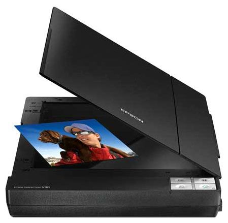
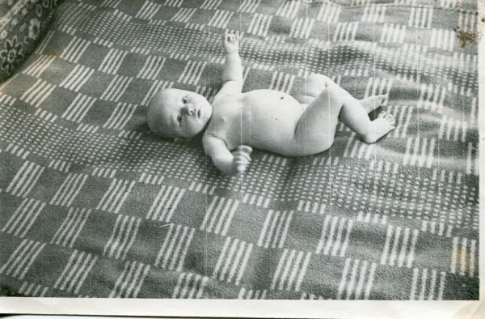

Несмотря на отказывающийся работать в Windows 7 сканер Genius, фотографии, привезённые из дома родителей, немым укором продолжали лежать на полке. Переустанавливать операционную систему желания особого не было и поговорив по душам с жабой решил купить новый сканер.
Сканер это вам не мыльница, случайные люди такие вещи не покупают, а значит и ассортимент сканеров в Кемерово не велик. Покурив интернет остановился на модели Epson Perfection V33, который вроде и сканирует быстро, и драйвера на него есть даже под 64-битную Windows 7.
Заехал сегодня после работы в ДНС на Октябрьском и стал счастливым обладателем второго сканера.

Со сканером, конечно идёт такой пластиковый кружок, который еще называют компакт-диск, но последний CD-ROM я сжёг совершенно по тупому с год назад, просто положив его разобранный на железный корпус. Поэтому для начала работы пришлось идти на оф.сайт Epson и качать драйверы. По-моему это, кстати, даже проще, чем открывать лоток CD-привода.
Драйверы скачал в панели задач появилась программа Epson Scan. Отсканировал первую фотку. Всё конечно прошло быстро и качественно, но на нажатие на хардварные кнопки на корпусе сканер, к сожалению, не реагировал никак. В ведь был должен.
Русскую версию оф.сайта я облазил вдоль и поперек, даже позвонил на бесплатную линию, но линия работала только с 9 до 18, а на оф.сайте решения не было.
Программа Epson Scan по нажатию хардварных кнопок не вызывалась. Решение нашлось на английской версии сайта, где людей считают людьми, на не обезьянами, слезшими с дерева.
Кроме самих драйверов для сканирования нажатием кнопки на компьютер необходимо установить программу Event Manager Utility. Скачать её можно только с английского оф.сайта. Прямая ссылка на скачивание программы.
Для тех, кому слова драйвер, сканер, софт и хард не знакомы и слова Шипачев и Максим радуют слух у меня готов образец мягкой эротики.
